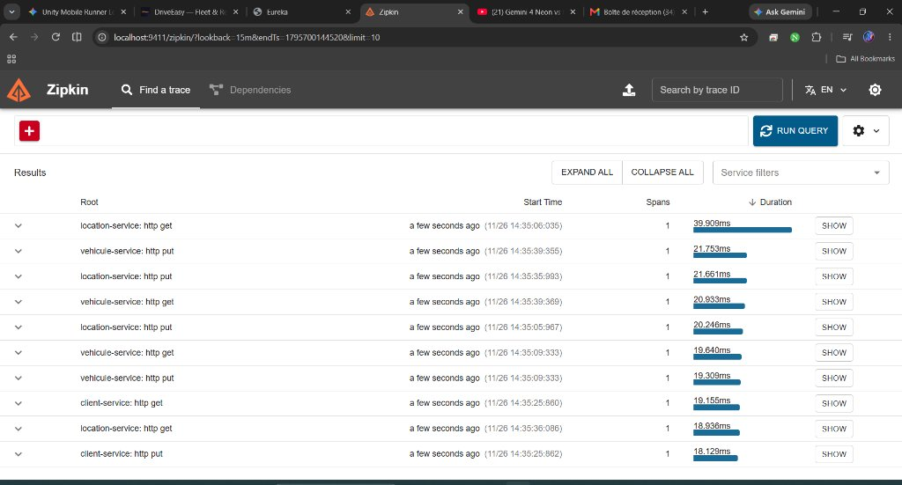
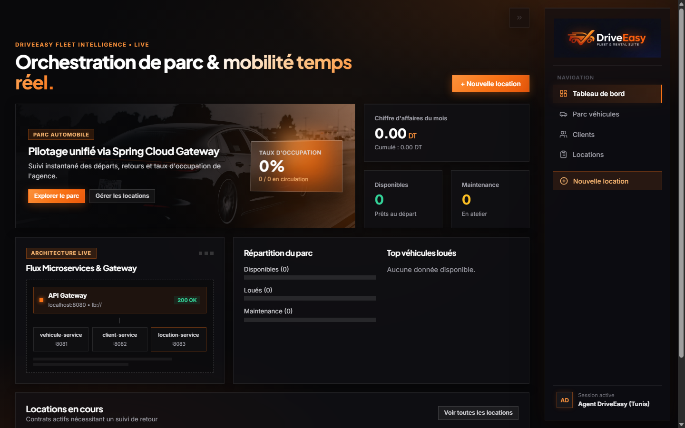
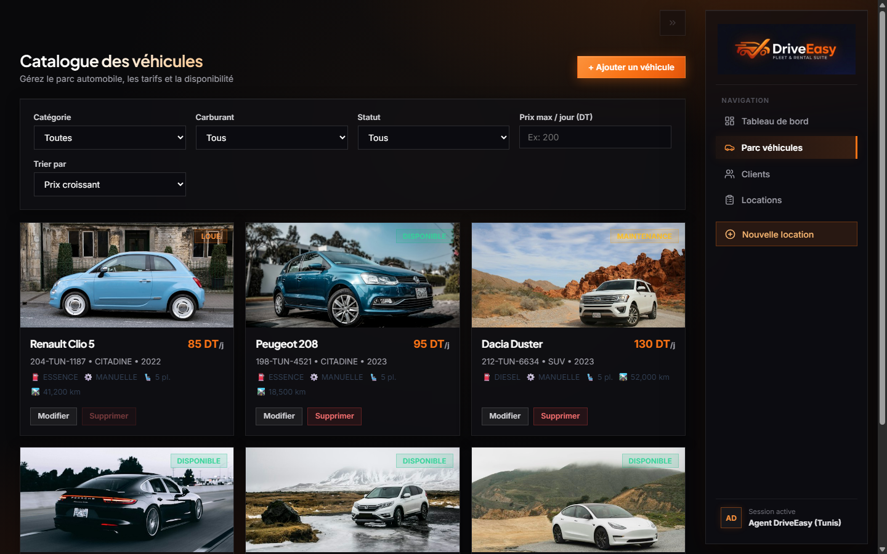
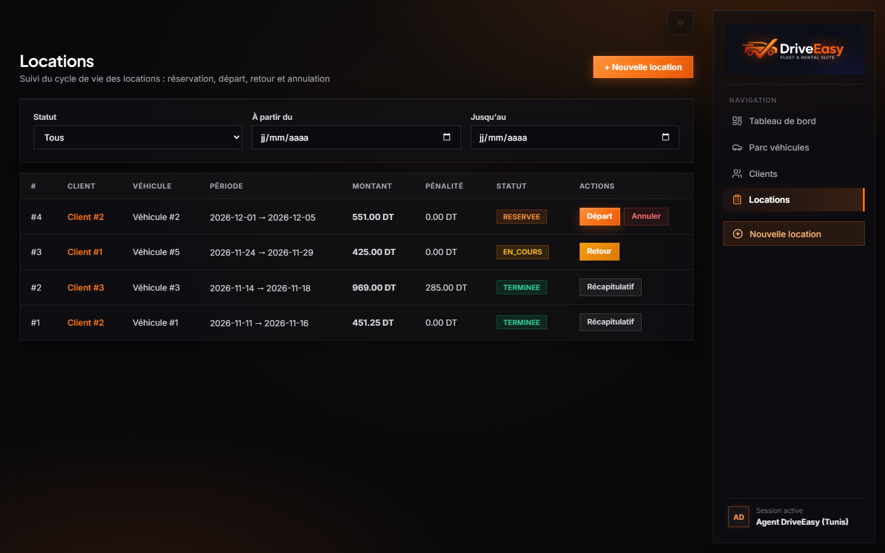
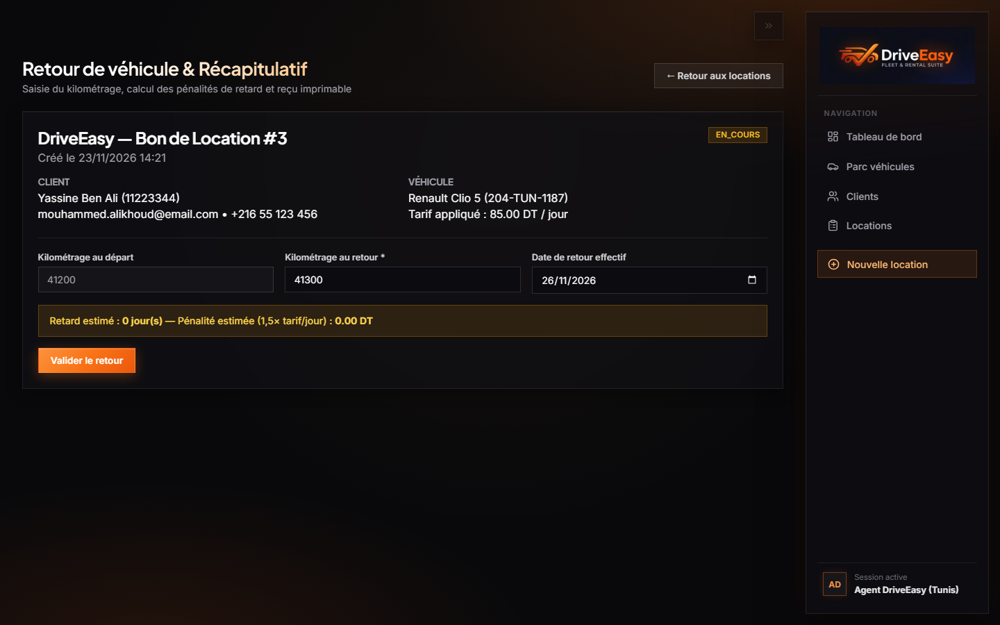

Figure 4 : Tableau de bord Eureka montrant les 4 instances enregistrées (UP).
Réalisé par : Azouz Wadhah
Enseignant : Karim Ben Romdhane
Technologies : Java 21, Spring Boot 3.4.5, Spring Cloud, Eureka, Config Server, API Gateway, Zipkin (Docker), Angular 22
Année universitaire : 2025 – 2026
La société DriveEasy souhaite remplacer son application monolithique de location de voitures par une plateforme moderne basée sur une architecture microservices (Spring Boot / Spring Cloud) accompagnée d'une interface web Angular 22 pour les agents d'agence.
Problématique : Comment découper la gestion des véhicules, des clients et des locations en services indépendants tout en conservant un point d'entrée unique, une configuration centralisée et un suivi complet des appels inter-services ?
L'acteur principal est l'agent d'agence. Il utilise l'application Angular 22 pour gérer le catalogue de véhicules, vérifier l'éligibilité des clients et piloter les locations.
1,5 × tarif/jour) et annulation.ConcurrentHashMap, aucune base externe), point d'entrée unique via l'API Gateway, gestion centralisée des erreurs HTTP (400, 404, 409, 500) et traçage distribué à 100 %.| Choix | Rôle | Justification |
|---|---|---|
| Java 21 & Spring Boot 3.4.5 | Socle backend | Modèles Java simples, validation @Valid, Actuator intégré. |
| Spring Cloud 2024.0.1 | Eureka, Config, Gateway | Découverte dynamique, configuration centralisée et routage lb://. |
ConcurrentHashMap (RAM) | Stockage sans BDD | Conformité au cahier des charges, thread-safe et démarrage instantané. |
| Zipkin (Docker) | Traçage distribué | Déploiement en une commande via docker-compose.yml. |
| Angular 22 (Standalone) | Frontend web | Composants autonomes, lazy loading, signaux réactifs. |
Le frontend Angular (:4200) passe exclusivement par l'API Gateway (:8080), qui s'appuie sur Eureka (:8761) pour router les requêtes vers les 3 microservices métier.
| Composant | Port | Rôle |
|---|---|---|
service-registry | 8761 | Annuaire Eureka des services enregistrés. |
config-server | 8888 | Centralisation des configurations YAML (config-repo/). |
vehicule-service | 8081 | Gestion du parc automobile et des disponibilités. |
client-service | 8082 | Gestion des clients, éligibilité et fidélité. |
location-service | 8083 | Orchestration des locations, tarifs, pénalités et statistiques. |
api-gateway | 8080 | Point d'entrée unique, routage lb://, CORS, filtre global. |
zipkin (Docker) | 9411 | Traçage distribué des requêtes inter-services. |
driveeasy-frontend | 4200 | Interface Angular 22 pour les agents d'agence. |
Service Registry & Config Server : service-registry démarre sur 8761 avec @EnableEurekaServer. config-server (8888) expose les propriétés communes (Eureka, Actuator, Zipkin) et les profils par service.
Microservices & Gateway : chaque service suit le modèle Controller → Repository avec validation @Valid et gestion globale des exceptions (@RestControllerAdvice). La Gateway (8080) applique StripPrefix=1 et autorise http://localhost:4200.
// LocationController.java — Démarrage avec compensation si erreur
updateVehiculeStatut(location.getVehiculeId(), "LOUE", null);
try {
location.setStatut(StatutLocation.EN_COURS);
return LocationResponse.fromEntity(repository.save(location));
} catch (Exception ex) {
updateVehiculeStatutSafe(location.getVehiculeId(), "DISPONIBLE", null);
throw ex;
}
| Service | Endpoints principaux |
|---|---|
vehicule-service | GET/POST /vehicules, GET/PUT/DELETE /vehicules/{id}, PATCH /vehicules/{id}/statut, GET /vehicules/disponibles |
client-service | GET/POST /clients, GET/PUT/DELETE /clients/{id}, GET /clients/{id}/eligibilite, PATCH /clients/{id}/categorie |
location-service | GET/POST /locations, POST /locations/simulation, PATCH /locations/{id}/depart|retour|annulation, GET /locations/statistiques |

L'application Angular 22 est organisée en src/app/core/ (modèles, VehiculeService, ClientService, LocationService, agencyAuthGuard, apiErrorInterceptor) et src/app/features/ (composants standalone chargés en lazy loading).
| Route | Composant | Fonctionnalité |
|---|---|---|
/dashboard | DashboardComponent | Indicateurs du parc, chiffre d'affaires et top véhicules |
/vehicules, /new, /:id/edit | VehiculeList / Form | Catalogue avec filtres, tri, pagination et formulaire réactif |
/clients, /clients/:id | ClientList / Detail | Recherche, badges fidélité, alerte permis expiré et historique |
/locations, /new, /:id/retour | LocationList / Wizard / Retour | Cycle complet, assistant 5 étapes, pénalités et bon imprimable |






DriveEasy répond à l'ensemble des exigences du cahier des charges grâce à une architecture microservices Spring Boot / Spring Cloud complète (Eureka, Config Server, Gateway, Zipkin) et un frontend Angular 22 moderne.
Perspectives : remplacer le stockage en mémoire vive (ConcurrentHashMap) par une base PostgreSQL par microservice, ajouter une authentification JWT (Spring Security / Keycloak) et automatiser les tests d'intégration.